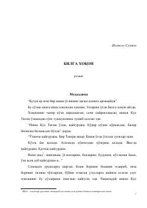

BXBuyuk turkiy hukmdor Bilga Xoqonning hayoti va davlat boshqaruvi haqidagi tarixiy roman.
Ushbu roman buyuk turkiy hukmdor Bilga Xoqonning hayoti, uning davlatni boshqarishdagi donoligi va ukasi Kul Tigin vafotidan keyingi ruhiy iztiroblari haqida hikoya qiladi. Asarda o'sha davrdagi turkiy xalqlarning og'ir ijtimoiy ahvoli, urushlar va yurt ozodligi uchun olib borilgan kurashlar badiiy tilda tasvirlangan.